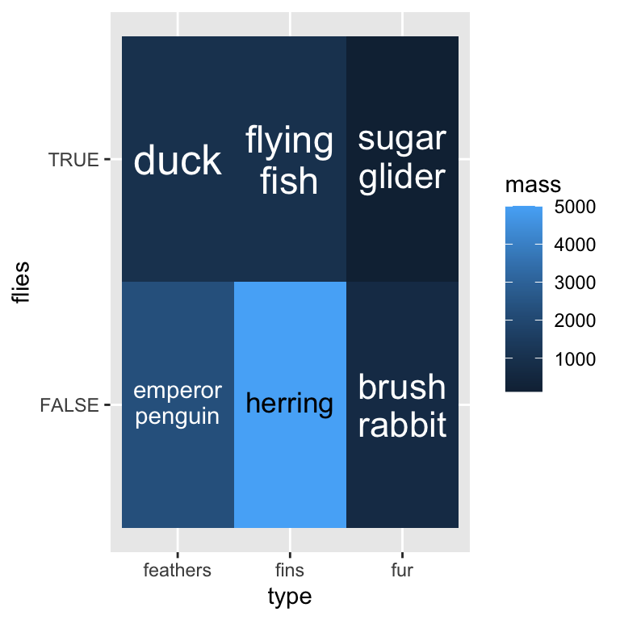

Introduction to 'ggfittext'
David Wilkins
2025-12-11
Source:vignettes/introduction-to-ggfittext.Rmd
introduction-to-ggfittext.RmdFitting text inside a box
Sometimes you want to draw some text in a ggplot2 plot so that it
fits inside a defined area. You can do this by manually fiddling with
the font size, but this is tedious and un-reproducible. ggfittext
provides a geom called geom_fit_text() that automatically
resizes text to fit inside a box. It works like this:
library(ggplot2)
library(ggfittext)
ggplot(animals, aes(x = type, y = flies, label = animal)) +
geom_tile(fill = "white", colour = "black") +
geom_fit_text()
As with geom_text(), the position of the text is set by
the x and y aesthetics.
geom_fit_text() tries to infer the width and height of the
box in which the text is allowed to fit, and shrinks down any text that
is too big.
Reflowing text
Another way to make the text fit in the box is by reflowing it; that
is, wrapping it over multiple lines. With the reflow = TRUE
argument, geom_fit_text() will reflow the text before (if
still necessary) shrinking it:
ggplot(animals, aes(x = type, y = flies, label = animal)) +
geom_tile(fill = "white", colour = "black") +
geom_fit_text(reflow = TRUE)
Growing text
If you want the text to be as large as possible, the argument
grow = TRUE will increase the text size to the maximum that
will fit in the box. This works well in conjunction with
reflow:
ggplot(animals, aes(x = type, y = flies, label = animal)) +
geom_tile(fill = "white", colour = "black") +
geom_fit_text(reflow = TRUE, grow = TRUE)
Placing text
By default, text is placed in the centre of the box. However, you can
place it in a corner or on a side of the box with the place
argument, which takes values like “top”, “topright”, “bottomleft” and so
on:
ggplot(animals, aes(x = type, y = flies, label = animal)) +
geom_tile(fill = "white", colour = "black") +
geom_fit_text(place = "topleft", reflow = TRUE)
Bar plots
ggfittext also provides a geom geom_bar_text() for
labelling bars in bar plots:
ggplot(altitudes, aes(x = craft, y = altitude, label = altitude)) +
geom_col() +
geom_bar_text()
geom_bar_text() works with stacked bar plots:
ggplot(beverages, aes(x = beverage, y = proportion, label = ingredient,
fill = ingredient)) +
geom_col(position = "stack") +
geom_bar_text(position = "stack", reflow = TRUE)
And it works with dodged bar plots, and with flipped bar plots:
ggplot(beverages, aes(x = beverage, y = proportion, label = ingredient,
fill = ingredient)) +
geom_col(position = "dodge") +
geom_bar_text(position = "dodge", grow = TRUE, reflow = TRUE,
place = "left") +
coord_flip()
Specifying the box limits
If you want to manually set the limits of the box (instead of having
them inferred from x and y), you can use
xmin & xmax and/or ymin &
ymax:
ggplot(presidential, aes(ymin = start, ymax = end, x = party, label = name)) +
geom_fit_text(grow = TRUE) +
geom_errorbar(alpha = 0.5)
Alternatively, you can set the width and/or height with the
width and/or height arguments, which should be
grid::unit() objects. The horizontal and/or vertical centre
of the box will be defined by x and/or y.
Experimental feature: rich text
With the rich = TRUE argument,
geom_fit_text() and geom_bar_text() both
support a limited subset of Markdown and HTML markup for text (rendered
with gridtext).
ggplot(animals_rich, aes(x = type, y = flies, label = animal)) +
geom_tile(fill = "white", colour = "black") +
geom_fit_text(reflow = TRUE, grow = TRUE, rich = TRUE)
Rich text cannot be drawn in polar coordinates. Please note that this feature is liable to change, and is subject to upstream changes to gridtext.
Experimental feature: text in polar coordinates
Text can be drawn in polar coordinates with
geom_fit_text() simply by adding coord_polar()
to the plot. This feature is experimental and any bug reports are very
welcome.
ggplot(gold, aes(xmin = xmin, xmax = xmax, ymin = ymin, ymax = ymax,
fill = linenumber, label = line)) +
coord_polar() +
geom_rect() +
geom_fit_text(min.size = 0, grow = TRUE) +
scale_fill_gradient(low = "#fee391", high = "#238443")
Other useful arguments
All arguments to geom_fit_text() can also be used with
geom_bar_text().
-
contrastcan be used to automatically invert the colour of the text so it contrasts against a backgroundfill:
ggplot(animals, aes(x = type, y = flies, fill = mass, label = animal)) +
geom_tile() +
geom_fit_text(reflow = TRUE, grow = TRUE, contrast = TRUE)-
padding.xandpadding.ycan be used to set the padding between the text and the edge of the box. By default this is 1 mm. These values must be given asgrid::unit()objects. -
min.sizesets the minimum font size in points, by default 4 pt. Text smaller than this will be hidden (see alsooutside). -
outsideisFALSEby default forgeom_fit_text(). IfTRUE, text that is placed at “top”, “bottom”, “left” or “right” and must be shrunk smaller thanmin.sizeto fit in the box will be flipped to the outside of the box (if it fits there). This is mostly useful for drawing text inside bars in a bar plot. -
hjustandvjustset the horizontal and vertical justification of the text, scaled between 0 (left/bottom) and 1 (right/top). These are both 0.5 by default. -
formatterallows you to provide a function that will be applied to the text before it is drawn. This is mostly useful in contexts where variables may be interpolated, such as when using gganimate. -
fullheightis automatically set depending on place, but can be overridden with this option. This is used to determine the bounding box around the text. IfFALSE, the bounding box includes the x-height of the text and ascenders, but not any descenders. If TRUE, it extends from the top of the ascenders to the bottom of the descenders. This is mostly useful in situations where you want to ensure the baseline of text is consistent between labels (fullheight = FALSE), or when you want to avoid descenders spilling out of the bounding box (fullheight = TRUE).